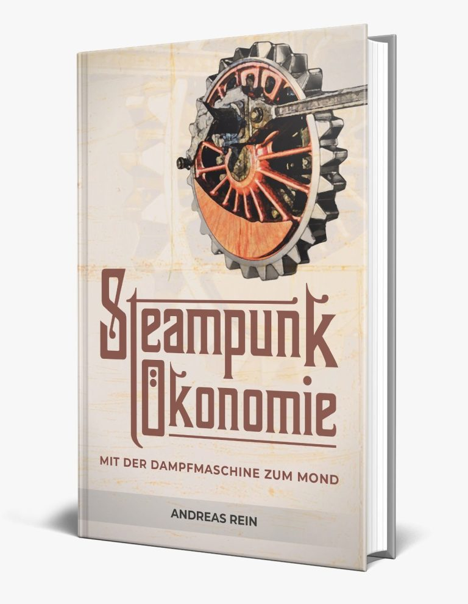

Die dritte Säule wird übersehen.
Neben Methoden und Strukturen prägen Haltungen, wie entschieden, geführt und verantwortet wird. Ich mache diesen Faktor besprechbar und gestaltbar.

Methoden eingeführt. Alltag unverändert.
Sechs Situationen, die ich in Organisationen immer wieder sehe. Hake ab, was Du kennst – der Befund zeigt, welche Säule wackelt.
Ein Impuls, keine Diagnose. Die echte Bestandsaufnahme ist die HBO-Diagnose.
Drei Säulen. Sie tragen nur gemeinsam.
Herkömmliche Organisationsentwicklung setzt bei Methoden und Strukturen an. Haltungsbasierte Organisationsentwicklung (HBO) setzt zusätzlich bei der Haltung an – und gestaltet Strukturen so, dass sie zu ihr passen.
Und Flow? Ist keine vierte Säule. Flow ist das, was passiert, wenn alle drei tragen: Wertschöpfung, Entscheidungen und Zusammenarbeit kommen wieder ins Fließen.
HBO ist ein Ansatz aus über 20 Jahren Praxis, den ich weiterentwickle – keine fertige Lehre, sondern ein Denkmodell, das sich im Alltag bewähren muss.
Drei Wege hinein.
Jedes Angebot beginnt mit einem Gespräch und endet mit etwas, das im Alltag funktioniert – nicht mit einem Foliensatz.
HBO-Diagnose & Transformationsbegleitung
- Für
- Führungsteams mit Veränderungsvorhaben
- Ergebnis
- Bestandsaufnahme von Methoden, Strukturen und Haltung – und eine priorisierte Handlungsrichtung
- Einstieg
- Diagnose-Gespräch
Steuerungssysteme
- Für
- Führungskräfte mit Priorisierungs- und Portfolioproblemen
- Ergebnis
- Eine Entscheidungs- und Steuerungsarchitektur, die zur Führungspraxis passt – mit Flight Levels und OKR
- Einstieg
- Gemeinsame Standortbestimmung
Führungsentwicklung & Coaching
- Für
- Führungskräfte und Teams, deren Rollen unklar sind
- Ergebnis
- Ein geklärtes Rollenverständnis und wirksamere Führung
- Einstieg
- Erstgespräch

Informatiker, Jurist, Psychologe. Am Ende ging es immer um dasselbe.
Ich habe Software entwickelt, Programme gesteuert, Wirtschaftsrecht gelehrt und Führungskräfte trainiert. In über 20 Jahren habe ich viele Methoden kommen sehen – und erstaunlich wenig, das sich danach im Alltag verändert hat.
Nicht, weil das Framework falsch war. Sondern weil niemand über die Haltung gesprochen hat, mit der geführt, entschieden und Verantwortung getragen wird. Genau dort setze ich an: als Organisationsarchitekt, der Methoden, Strukturen und Haltung so verbindet, dass Arbeit wieder fließt.
„Ich führe keine Methoden ein. Ich sorge dafür, dass sie wirken.“
IT · Telekommunikation · Gesundheitswesen · Finanzdienstleistungen · Öffentliche Verwaltung · Start-ups
Sieben Thesen, für die ich einstehe.
Keine Glaubenssätze zum Abheften. Eher die Fragen, mit denen ich in jede Organisation hineingehe.
- Methoden sind Werkzeuge. Wer sie zum Ziel erklärt, hat am Ende ein sehr ordentliches Werkzeugregal.
- Veränderung scheitert selten am Framework. Sondern an der Haltung, mit der es eingeführt wird.
- Strukturen müssen zur Haltung passen. Oder bewusst helfen, sie weiterzuentwickeln. Alles andere ist Kulisse.
- Verantwortung lässt sich nicht delegieren. Nur ermöglichen.
- Was nicht besprechbar ist, ist nicht gestaltbar. Deshalb beginnt meine Arbeit mit Fragen, nicht mit Antworten.
- Eine Organisation ist kein Uhrwerk. Wer sie wie eines steuert, bekommt Dienst nach Vorschrift.
- Flow ist kein Ziel. Flow ist das Zeichen, dass Methoden, Strukturen und Haltung zusammenpassen.
Steampunk Ökonomie – mit der Dampfmaschine zum Mond?
Über den Versuch, heutige Herausforderungen mit den Steuerungsinstrumenten des vergangenen Jahrhunderts zu lösen – und warum das zuverlässig scheitert.

Werkzeugkunde.
Zertifikate zeigen, welches Werkzeug ich kenne. Die eigentliche Kunst ist, zu wissen, wann man es im Koffer lässt.
Werdegang
Weiterdenken.
Was ich in Organisationen beobachte, schreibe ich auf – regelmäßig und kostenlos auf Substack.
Haltungsbasierte Organisationsentwicklung
Über Führungsverständnis, Steuerungsarchitektur und Zusammenarbeit – und warum Organisationen erst handlungsfähig werden, wenn alle drei zusammenpassen.
Auf Substack lesen ↗Zwanzig Minuten. Kein Pitch.
Du schilderst Deine Situation, ich stelle Fragen. Danach weißt Du, ob und wie ich helfen kann – und ich sage es Dir auch, wenn nicht.
- Termin wählenDirekt in meinem Kalender. Per Video oder Telefon.
- Situation schildernWas ist eingeführt, was hakt, was wurde schon versucht?
- Ehrliche EinschätzungWelche Säule trägt, welche wackelt – und welcher Einstieg sinnvoll wäre.
- Du entscheidestKein Angebot im Gespräch, keine Nachfass-Mails.

Such Dir einen Termin aus, der Dir passt.
Du siehst meine freien Zeiten und buchst direkt in meinen Kalender. Die Bestätigung mit Kalendereinladung kommt sofort.
Beim Laden wird eine Verbindung zu Calendly (USA) hergestellt. Mehr dazu in den Datenschutzhinweisen. Lieber direkt? Termin auf Calendly öffnen ↗